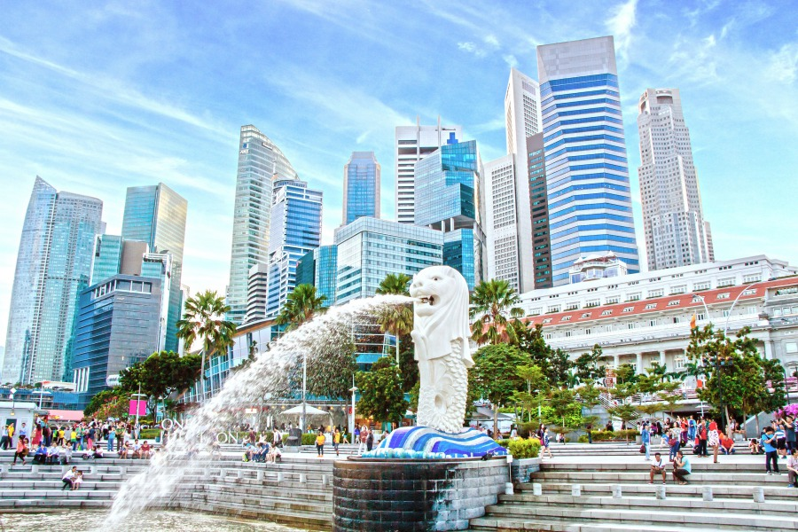
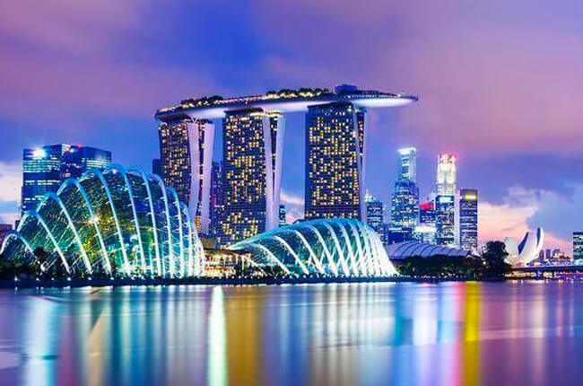
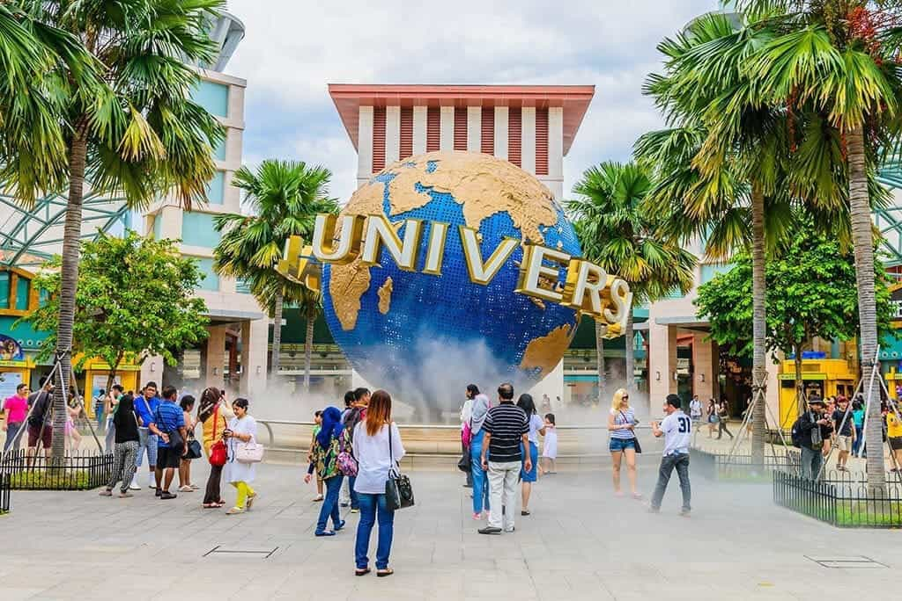

遊Guide
Home
日本
韓國
台灣
新加坡
Home
日本
韓國
台灣
新加坡
新加坡：吃喝玩樂不斷
新加坡，食玩買齊齊哂！ 喜歡食？海南雞飯、辣椒蟹等住你！鍾意買嘢？從大型購物商場到特色市集，任你揀！仲有夜間動物園同濱海灣花園等著你嚟探險。即刻睇吓我哋嘅新加坡自由行懶人包，唔好錯過呢個精彩嘅地方！

新加坡旅遊概況
新加坡是亞洲的貿易重鎮，以其獨特文化和高生活水準著稱。
2019年吸引超過3000萬遊客，顯示出其旅遊魅力。
政府目標在2030年前每年接待4000萬名外國遊客。
低腐敗程度和嚴格法律制度確保了治安安全。
生活成本
新加坡的生活成本高昂，房價和交通費用普遍較高。
成為全球生活成本最高的城市之一，需相當可觀的收入來維持日常開銷。

文化與社會體驗
提供豐富的文化體驗，從繁華的購物區到美麗的公園。
小販中心提供各式美食，高端餐廳則提供奢華用餐體驗。
居住優勢與教育
教育體系: 吸引眾多外籍家庭，擁有多所國際學校，提供高質量的教育選擇。
理想居住地: 新加坡以卓越的經濟發展、優質生活環境和安全社會氛圍，成為全球遊客和移民心目中的理想之地。

最佳旅遊時間
新加坡的最佳旅遊季節為春季和夏季，年平均溫度在23至31℃之間。
每年4月和7月舉辦世界美食家峰會及新加坡美食節，是饕客們的最佳時機。
購物達人可在6月打折季享受各種優惠，滿載而歸。
新加坡旅游局